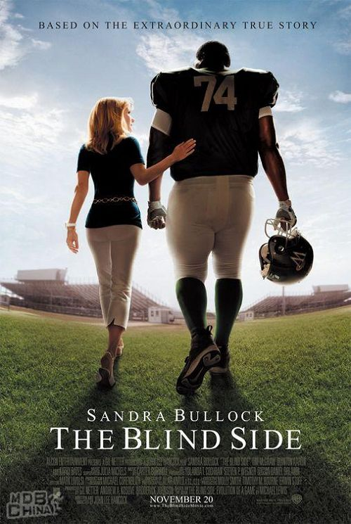

看碟 @ Apr 14, 2010
几个星期下来不过看了两部印象深刻的电影《The Blind Side 》（弱点）和《Precious》（珍爱），两部皆为励志片。
在一种不能释放的难过中看完《The Blind Side 》，好在这种情绪在结局得以缓解。而《Precious》则只有同情，这部电影获得本届奥斯卡6项提名，但却没有启动我最脆弱的部分，可能是对黑暗、扭曲、变态、不幸的社会现象几尽麻木。有些时候，我们也是这些现象的经历者、受害者，在经历中我们变得不那么容易伤怀动情，变得冷静坚韧，接受残酷现实与丑陋人性，同时保留善良部分。弱者会让人产生大量同情心，有人说，做一个弱者没什么不好，至少能获得同情，可我更欣赏由弱变强，自强不息的人生。
在整个人生的长途旅行中，我们可以选择看怎样的风景，走哪一条路，与怎样的人并肩同行，同时我们也尊重他人的选择。如果你有能力与一定的影响力，可以为社会做一些贡献，给予需要帮助的人以获得更好的人生，而不是决定他们的人生，那就足够了，不是吗？

6 Responses to “看碟”
2010-04-15
I watched the 《The Blind Side 》over the weekend as well. Since I live in the States for years, I knew how tough that is to be a black kids growing up in US and how lucky that black kid was, been adopted by a loving/caring family.
2010-04-15
Meet the true Michael and his family,
http://abcnews.go.com/2020/BlindSide/
In American football, Michael’s position is to protect the blind side of the Quarterback (the guy who throws the ball). So it is better to translate to <盲点>. It’s just my personal opinion.
2010-04-15
是的，那就足够了。
2010-04-15
我最近只看喜剧片或青春片，实在不想让自己有一点点难过的情绪。。
2010-04-27
虽然这几周的工作压力特别大，但丝毫不能减退我对看片的热情……上周末分别在小店和网上淘了大量的碟，也有这张《The Blind Side 》。
2010-04-27
The Blind Side 看了吗？很不错，赶紧看哦。
我这两天工作的状态可以拿刀宰牛了。就象穿红马甲疯狂的经纪人、操盘手？天天嘴巴里骂骂咧咧的，好象只有这样才能安抚我的情绪。
Leave A Reply
存档只读，评论已关闭。